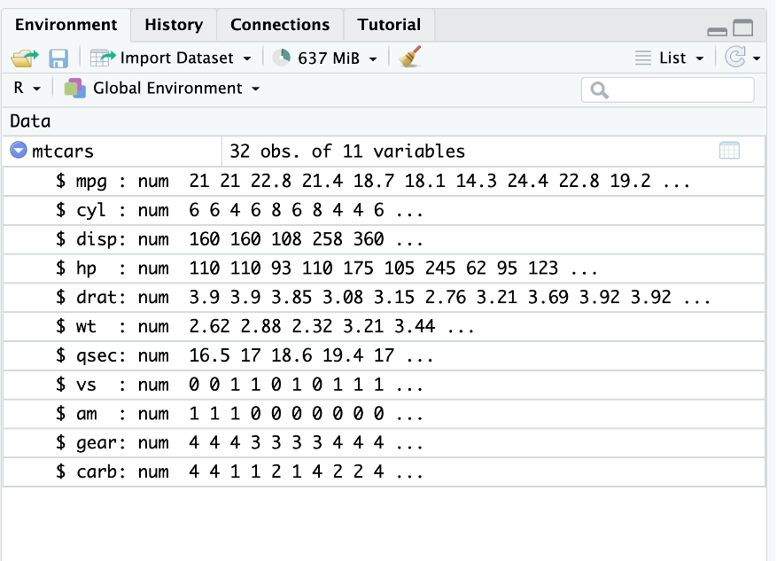
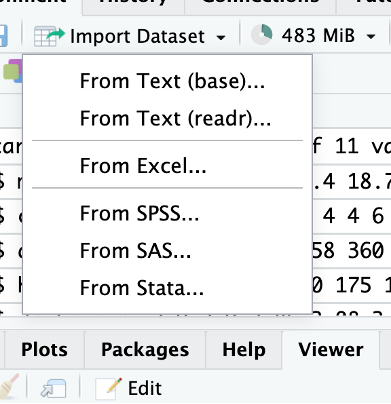
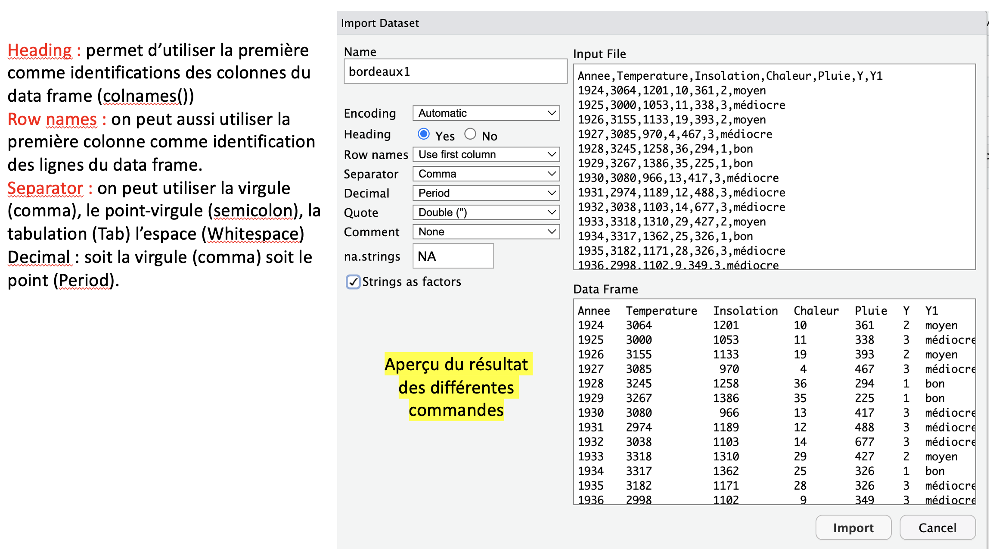
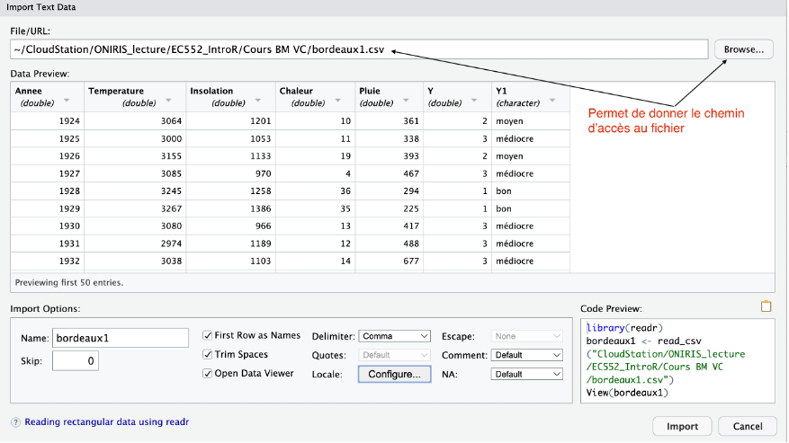
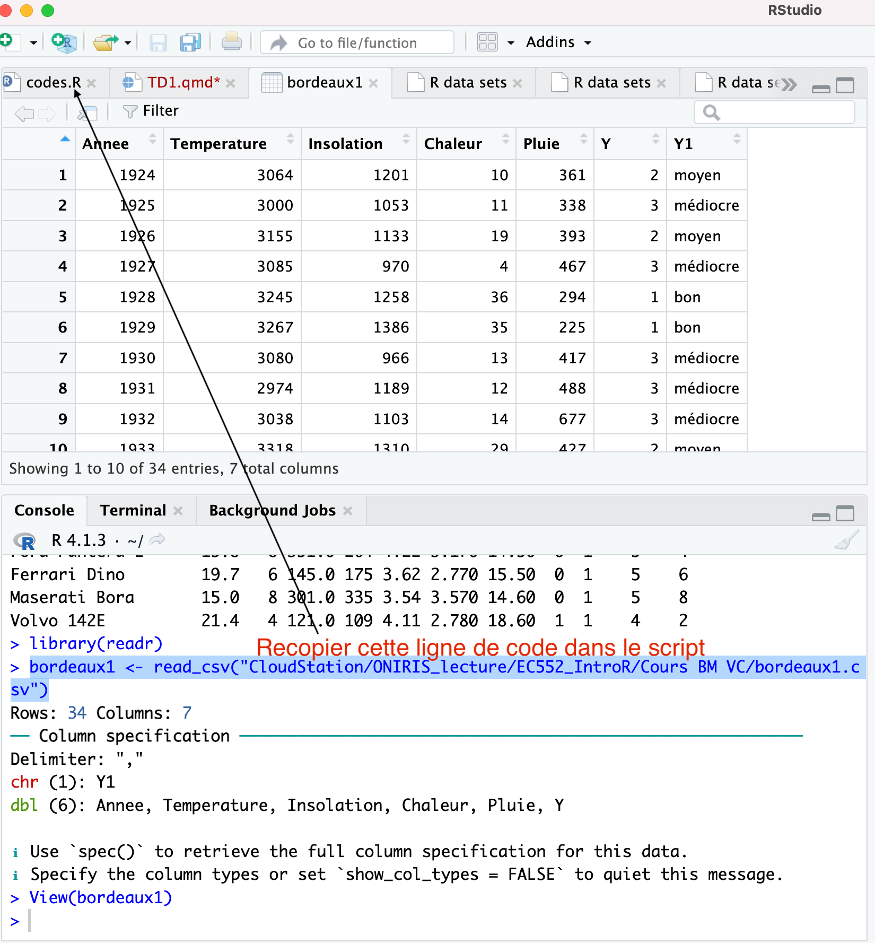

x<-round(runif(100,0,20),1)
y<-round(runif(100,0,20),1)
gr<-sample(c("ING1","ING2"),size=100,replace=T,prob=c(0.6,0.4))
df<-data.frame(NoteF=x,NoteM=y,gr=gr)3 Les data frames
C’est l’objet le plus important et le plus utilisé dans R il s’agit d’un tableau de données mais contrairement aux matrices on peut avoir différents types de données dans un dataframe.
3.1 Création d’un data frame
On crée deux variables x et y contenant \(n=100\) nombres distribués selon une loi uniforme continue sur [0,20] (fonction runif) et une variable gr (expliquer le résultat du code correspondant). La fonction round permet d’arrondir.
L’indexation des éléments dans un data-frame est la même que dans une matrice :
df[1,1][1] 0.2On peut également sélectionner une colonne du data frame via $
df$NoteF [1] 0.2 16.0 7.6 5.4 4.3 15.0 8.5 2.7 0.5 3.4 5.3 4.4 11.0 2.1 18.6
[16] 7.8 3.9 11.8 15.2 0.5 17.4 9.1 11.5 1.8 8.5 17.5 7.2 6.8 19.8 18.9
[31] 10.0 9.3 17.0 9.2 11.7 8.8 10.1 8.8 7.9 7.9 17.0 17.5 4.5 13.1 2.6
[46] 18.1 13.6 4.9 7.5 3.0 10.5 12.2 3.7 3.1 18.0 13.8 9.1 9.7 1.6 4.5
[61] 1.8 1.2 15.9 14.5 1.7 18.8 11.1 11.1 8.0 1.7 19.2 4.2 8.9 9.5 12.5
[76] 0.9 2.7 0.9 10.1 17.3 9.7 0.5 1.7 17.4 7.6 2.5 1.4 17.2 16.5 14.1
[91] 6.0 9.8 13.0 12.5 0.6 16.2 2.3 14.3 18.9 17.03.2 Les fonctions utiles pour les data frame
3.2.1 summary
Cette fonction permet de résumer l’ensemble des variables du data frame.
summary(df) NoteF NoteM gr
Min. : 0.200 Min. : 0.600 Length:100
1st Qu.: 3.850 1st Qu.: 5.025 Class :character
Median : 9.100 Median : 9.700 Mode :character
Mean : 9.226 Mean : 9.519
3rd Qu.:14.150 3rd Qu.:14.125
Max. :19.800 Max. :19.700 3.2.2 apply
La fonction apply permet d’appliquer une fonction sur les lignes (1) ou les colonnes d’un data frame : par exemple si on souhaite appliquer la fonction moyenne (mean) sur les colonnes du data frame df on utilise :
apply(df[,1:2],2,mean)NoteF NoteM
9.226 9.519 Remarque : on n’a utilisé que les deux premières colonnes du data frame car la troisième n’est pas numérique (donc on ne peut pas calculer sa moyenne).
3.3 Importation d’un data frame inclus dans un package
Pour accéder aux data frames de R :
data()ensuite on peut grâce à la fonction help obtenir de l’aide sur l’un des data frame :
help("mtcars")Ensuite on charge le jeu de données via
data("mtcars")Une fois le data frame importé on constate qu’il est présent dans la fenêtre environnement

4 Fonction factor()
Cette fonction va être très importante pour la suite et en particulier lorsque l’on va manipuler des jeux de donnnées en statistique.
Un facteur est une variable qualitative. Les valeurs prises par cette variable sont appelées modalités. Il peut arriver que ces modalités soient codées. Par exemple dans certains jeux de données on connaîtra le statut professionnel des participants (modalités : en activité, en recherche d’emploi, étudiant, à la retraite) mais on peut avoir choisi de coder les modalités par des nombres (ici de 1 à 4) mais cette variable demeure un facteur.
Dans R :
statut_pro<-sample(1:4,100,replace=T)
## R ne voit pas qu'il s'agit d'un facteur car les modalités sont numériques
class(statut_pro)[1] "integer"table(statut_pro)statut_pro
1 2 3 4
27 21 32 20 On utilise la fonction factor pour dire à R qu’il s’agit d’une variable qualitative. On voit le changement à travers class ou levels :
statut_pro<-factor(statut_pro)
class(statut_pro)[1] "factor"levels(statut_pro)[1] "1" "2" "3" "4"On peut renommer les niveaux du facteur via la fonction levels()
levels(statut_pro)<-c("en activité", "en recherche d'emploi","étudiant", "à la retraite")
table(statut_pro)statut_pro
en activité en recherche d'emploi étudiant
27 21 32
à la retraite
20 Remarque : Les variables binaires (facteurs à deux modalités) sont souvent codées 0/1.
On peut être amené à vouloir avoir les modalités d’un facteur classées dans un certain ordre pour ce faire on va utiliser la fonction levels avec l’ordre choisi :
statut_pro<-factor(statut_pro,levels=c("étudiant","en activité","en recherche d'emploi","à la retraite"))
table(statut_pro)statut_pro
étudiant en activité en recherche d'emploi
32 27 21
à la retraite
20 Attention les levels doivent être exactement écrits de la même façon que les levels si les modalités sont déjà écrites et sinon on peut directement agir sur les modalités via labels :
4.1 Fusion de plusieurs catégories
statut_pro=replace(statut_pro,statut_pro %in% c("étudiant",
"en activité"),"en activité")
table(statut_pro)statut_pro
étudiant en activité en recherche d'emploi
0 59 21
à la retraite
20 Le problème est que la catégorie étudiant existe encore donc il faut que R “l’oublie”.
4.2 Oubli de niveaux
statut_pro=droplevels(statut_pro)
table(statut_pro)statut_pro
en activité en recherche d'emploi à la retraite
59 21 20 4.3 Importation d’une base de données externe
On peut utiliser une interface graphique pour ouvrir les fichiers contenant le data frame. Les plus courants sont :
- *.csv : (Comma Separed Values) ce sont des fichiers de type tableaux sans mise en forme
- *.xlsx : fichiers produits à partir du logiciel excel
- *.ods : fichiers produits à partir du logiciel Calc de LibreOffice.

On va importer le data frame contenu dans le fichier bordeaux.csv disponible sur Connect (vous devez le télécharger).
Vous avez deux solutions : From text (base)

From text (readr)

Ensuite il est recommandé de copier/coller la ligne de commande dans le script R afin de pas à avoir à reproduire la manipulation à chaque session de travail sur le fichier bordeaux.csv

4.4 Exercice sur le data frame iris
- Charger le fichier de données iris. Lire l’aide de iris pour comprendre le jeu de données.
Voir la correction
data("iris")
help("iris")- Quel est le type de iris ? Quelles sont les dimensions de iris ?
Voir la correction
class(iris)
dim(iris)- Appliquer la fonction str à iris. A quoi correspondent les informations renvoyées ?
Voir la correction
str(iris)- Appliquer la fonction summary à iris. A quoi correspondent les informations renvoyées ?
Voir la correction
summary(iris)- Utiliser les fonctions colnames() et rownames(). Quelles sont les informations renvoyées ?
Voir la correction
rownames(iris)
# Le nom des lignes de iris
colnames(iris)
# Le nom des colonnes de iris- A l’aide la fonction de texte paste remplacer le nom des lignes par fleur 1, …, fleur 150.
Voir la correction
rownames(iris)<-paste("fleur",1:150,sep=" ")- Pour un data frame on peut appeler une colonne par son nom en utilisant $ : iris$Sepal.Length. En utilisant cette information donner la classe de la colonne Species.
Voir la correction
class(iris$Species)- Quels sont les niveaux du facteur “Species” (fonction levels) ?
Voir la correction
levels(iris$Species)- Créer une nouvelle colonne nommée groupe (on pensera à $) dans le data frame iris identique à la colonne Species. Quelle est la classe de cette nouvelle colonne ?
Voir la correction
iris$groupe=iris$Species
class(iris$groupe)- Renommer les niveaux de la colonne groupe en A, B, C (A pour setosa, B pour versicolor, C pour virginica). Afficher les indices des lignes de iris correspondant au groupe B.
Voir la correction
levels(iris$groupe)=c("A","B","C")
which(iris$groupe=="B")- Créer l’ensemble des numéros de lignes correspondantes aux fleurs du groupe A. Afficher les lignes de iris correspondant au groupe A. Proposer une solution alternative.
Voir la correction
I=which(iris$groupe=="A")
iris[I,]
iris[iris$groupe=="A",]- En adoptant la même logique que la question précédente, afficher uniquement les lignes de iris où « Sepal.Length » est inférieur à 5.
Voir la correction
iris[iris$Sepal.Length<=5,]- Combien y a-t-il d’individus ayant la longueur des sépales inférieure à 5 ?
Voir la correction
sum(iris$Sepal.Length<=5)4.5 Exercice sur le data frame mtcars
- Charger le data frame mtcars. Combien de véhicules et de caractéristiques sur les véhicules sont contenus dans le data frame ?
Voir la correction
data("mtcars")
help("mtcars")
dim(mtcars)- Deux caractéristiques sont mal identifiées dans le data frame car ce sont des variables qualitatives (facteurs), rectifier en utilisant la fonction as.factor.
Voir la correction
str(mtcars)
mtcars$vs=as.factor(mtcars$vs)
mtcars$am=as.factor(mtcars$am)- En utilisant l’aide du data frame mtcars renommer les niveaux des deux facteurs précédents.
Voir la correction
levels(mtcars$vs)=c("V","droit")
levels(mtcars$am)=c("Auto","Manu")- Etablir la table de contingence de ces deux facteurs (fonction table)
Voir la correction
table(mtcars$vs,mtcars$am)- Calculer la moyenne des 7 premières variables (on utilisera les fonctions mean et apply).
Voir la correction
apply(mtcars[,1:7],2,mean)- Reprendre la question pour les voitures avec un moteur à plat. De même pour les voitures ayant un moteur en V et qui sont automatiques.
Voir la correction
apply(mtcars[mtcars$vs=="V",1:7],2,mean)
apply(mtcars[mtcars$vs=="droit" & mtcars$am=="Auto",1:7],2,mean)- Calculer le nombre de voitures ayant un moteur en V qui ont au moins 3 carburateurs.
Voir la correction
sum(mtcars$vs=="V" & mtcars$carb>=3)